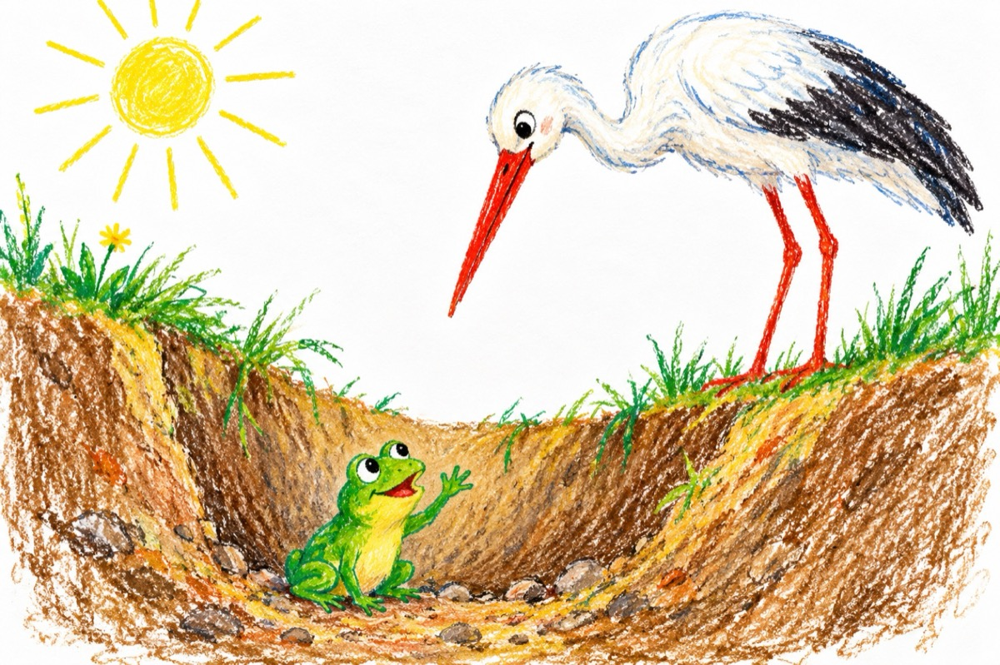

Broscoiul Liliput
-Sunt broscoiul Liliput
Ce-ntr-o groapă am căzut.
Și te rog pe dumneata
Dragă barză fă ceva!
Ai cioc și picioare lungi
Și la mine poți s-ajungi
Și de vrei salvează-mă
Libertatea de mi-o dă.
-Credeți-mă ce vă spun.
Broscoiul era nebun!
Cum să spui tu la o barză,
Hai te rog de mă salvează.
La mintea cocoșului,
Că barza îl va-nghiți!
-Eu o să te spun la zână,
C-ai făcut o treabă bună.
Și în schimb o să primești,
O masă cu ce poftești.
Cu moluște, șerpi de-o șchioapă,
Și cu foarte multă apă
Unde tu să pescuiești
Să mănânci tot ce dorești!
-Care Zână?
Asta-i bună!
Crede că barza-i nebună.
Asta-i masa ei cea bună
O broscuță proaspătă,
Ce pe gât alunecă.
-Sunt broscoiul Liliput
Ce în groapă am căzut
Și de barz-am fost salvat.
Asta-i tot ce s-a-ntâmplat
Se-auzea glasul pierdut
Ce aluneca pe gât.
-Groapa-i venea ca mănușa
Și-a schimbat groapa cu gușa.
Dar noroc c-am observat
Gâtul la barz-am blocat.
Spuse racul măcelar
Ce sta de servici pe mal.
-Oac, oac, oac și iarăși oac
Mă duc la ai mei pe lac
Să le spun ce s-a-ntâmplat.
Că am fost salvat de-un rac!...
Vasile Groza